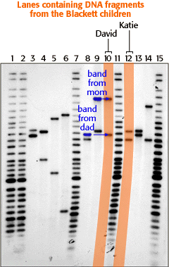

|  |
As mentioned earlier, children inherit 23 chromosomes from their mother and 23 from their father. In this autorad, we are looking at the RFLP marker D1S7 located on chromosome 1. In lanes 10 and 12, the DNA analyst loaded DNA from his children David and Katie. Each child inherited one copy of the D1S7 marker from their mother and one copy from their father. These markers show up as bands on the autorad. Most people have two bands because they inherit one band from each of their parents. Note that David inherited his mother's top band and his father's top band. David's sister Katie, however, inherited mom's bottom band and dad's bottom band. Sometimes siblings will inherit the same bands from their parents, although this is not the case for David and Katie at this DNA locus (i.e., they share no bands at D1S7). |


The Biology Project
University of Arizona
Tuesday, August 20, 1996
Contact the Development Team
http://biology.arizona.edu
All contents copyright © 1996. All rights reserved.